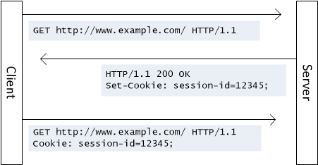

Cookie是一個最早被瀏覽器用來記錄使用者資訊的技術與規範，我們常用於紀錄一些不敏感的資訊，
好讓我們可以減輕伺服器負擔，以及追蹤使用者狀態，提升使用者的操作體驗。
Cookie是如何運作?
基本的運作原理其實是最容易被忽略的事情，因為現在的程式語言和開發框架都已經幫我們處理很多事，我們只要會使用framework提供的方法就夠了，但是如果遇到沒有實作cookie方法的框架該怎麼辦? 或是在寫單元測試及整合測試時遇到cookie該如何模擬?
基本運作機制如下:

- 當使用者透過瀏覽器請求某一個網站時，伺服器可以回應帶有Set-Cookie屬性的HTTP Header。
- 當瀏覽器接收到帶有Set-Cookie的Header時，會自動將cookie的name和value存放到瀏覽器內部的暫存區。
- 當瀏覽器再次對伺服器發出請求時，就會尋找暫存區內有沒有該網域並且在時效內的cookie，如果有的話就會加入到這次請求的Header中，放在名為Cookie的屬性裡。
以上運作機制我是參考保哥部落格以及維基百科，維基百科一定要找英文的，中文的cookie頁面寫得很少，但是英文的cookie頁面就寫得非常豐富，很值得一看。
Web Api有沒有Cookie?
現在讓我們回到正題，到底Api有沒有Cookie? 其實大家只要google關鍵字”ASP.NET Web Api Cookie”就能找到這篇官方文章ASP.NET Web API 中的HTTP Cookie，上面包含原理及實作方式都已經寫得非常清楚。事實上，Cookie並不是專屬瀏覽器的功能，Cookie是一種通用的HTTP狀態管理的規範，最早被定義在RFC 2109，現行的瀏覽器都是依照這個規範為基礎，實作Cookie的機制。
因此，我們的問題應該是，Web Api有沒有實作操作Cookie的類別及方法? 答案是: 有的。至於為什麼很多人會覺得Api就應該沒有Cookie，是因為接收Api的應用程式框架(可能是桌面軟體或手機軟體)，沒有實作操作Cookie的類別及方法。如果Api只是要向App互傳參數，根本不須要依照Cookie規範，傳參數的方法很多，藏在Header也可以，少數情況下才會用到Cookie。
來看一下Web Api的cookie操作方式，範例為用cookie紀錄使用者的拜訪次數:
1 | public HttpResponseMessage Get() |
再來看一下MVC的cookie操作方式，有點不一樣:
1 | public ActionResult Index() |
結論
Cookie只是一種基於HTTP的儲存與傳輸規範，在不同的架構中會有不同的做法。